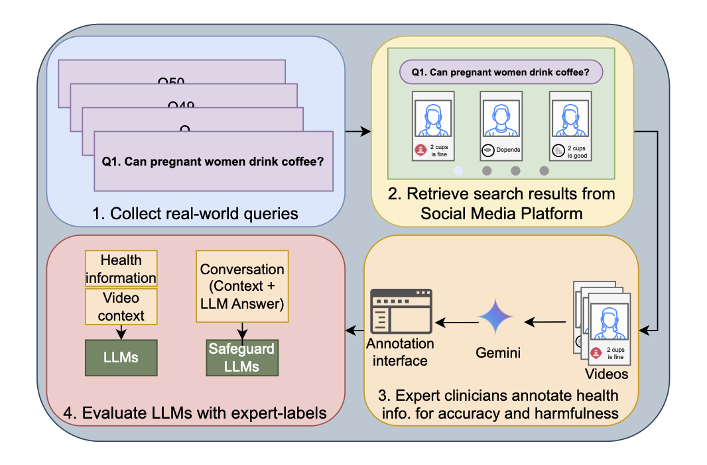

RELIANCE: Curating and Evaluating Reproductive Health Information on Social Media
Devise data curation multi-modal agents to collect and curate reproductive health information from TikTok and work with clinicians to evaluate the accuracy of the content and how LLMs perform in evaluating the content for accuracy and harms.
@inproceedings{
balloli2026reliance,
title={{RELIANCE}: Curating and Evaluating Reproductive Health Information on Social Media},
author={Vaibhav Balloli and Laura Peyton Ellis and Vishala Mishra and Alice M Chi and Alex Friedman Peahl and Elizabeth Bondi-Kelly},
booktitle={KDD 2026 Datasets and Benchmarks Track (Cycle 2)},
year={2026},
url={https://openreview.net/forum?id=tzjulgs9sD}
}